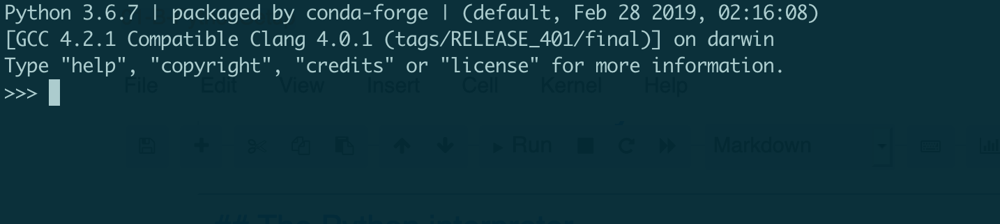
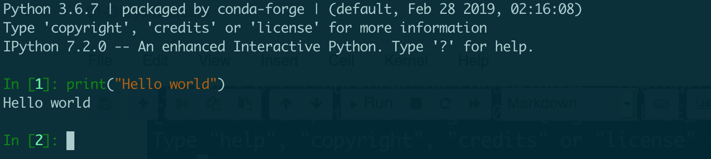
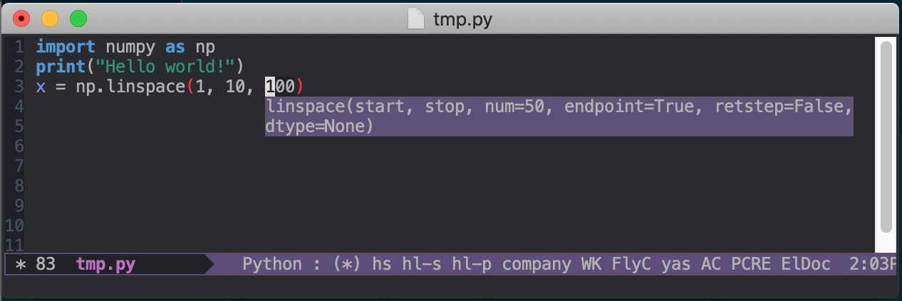

Python Setup#
Python is :
An interpreted and dynamic language
A high level language
A very popular language
Well suited for scientific computing
{kind=link}
How to install/use python on your computer#
Local install python using anaconda : https://www.anaconda.com/distribution/#download-section .
Use google collaboratory : https://colab.research.google.com/
Use mybinder: https://mybinder.org/v2/gh/iluvatar1/HerrComp-FisComp-dev/HEAD
Azure notebooks, sage notebooks, deepnote, etc.
Python on scientific computing#
https://researchcomputing.princeton.edu/support/knowledge-base/python
https://www.hpc-carpentry.org/hpc-python/
How to execute/use Python code#
The Python interpreter#
The python interpreter is very primitive and basically interprets commands as you type them. For example, you can type commands likeprint "Hello World" and expect the output.
Since it is much more convenient to use the iPython super-enhanced interpreter, we will not focus here on the bare-bones python interpreter.
How to quit from the command prompt? try whatever you think (quit, ctrl+d, etc)

iPython#
iPython is, currently, the standard interactive interpreter. It has many advantages over the original python interpreter, like autocopletion of variables, tight integration with the system commands, history, easy documentation access, etc.
Exercise: Please open an ipython console, by either going to the appropriate part on the Spyder IDE, or by open ipython through the Anaconda launcher. Type some commands there.
The ipython interpreter is a much more advanced interpreter which allows to get better error reporting, interactive help, magic commands, fast history access, and muhco more.

Python scripts#
In general, interactive sessions are designed for fast testing and propotyping. But, if you want to store a group of commands for later use (a program), then ypu should save it on Python file, whose termination is .py. Exercise: On the Spyder editor, type some commands and save the file with the appropriate extension. Then re-open it and run it. You can also load/run the file directly from ipython. You need to use the magic words %load or %run . Check the docs and do it.

iPython notebook#
The ipython notebook is a very convinient way to store ipython commands, together with notes, figures, and results. Currently, you are looking at the result obtained from an ipython notebook. This is very useful for logs, instructions, manuals, and interactive programming. An ipython notebook is stored in json format, which allows to include not only instructions but also command results and even figures. To execute a given cell, you should use the combination shift+enter.
Exercise: Open an ipython notebook by using the anaconda launcher, and write some commands and some instructions. Save it. Re-open it. Or use google collab, or mybinder
IDE: Spyder, pycharm, visual, etc#
You have already used the IDE Spyder. This is an integrated develompment environment which allows editing, running, debugging, etc. of simple and complex (projects) python files. We will use only the very basic but you should get familiar with Spyder to exploit it better. admasnda sad as das das
There are other multiplatform solutions, like Canopy (free for academics) or Python(X, Y). Look at them on google.
Some command examples inside a notebook#
You can also try them on ipython.
print ("Hello World, from python!")
Hello World, from python!
name = ""
print("Hola")
#name = input("Dime tu nombre: ")
print("Hola", name)
Hola
Hola
Summary#
There are several ways to use python:
Using the interpreter,
pythonUsing the more modern interpreter,
ipython(always use this by default if you need an interpreter)Using an ipython notebook : either by launching it as
ipython notebookwhich will open your browser at127.0.0.1:8888, or by using the editor in any ide (like Canopy, Anaconda-sPyder, etc). Notebooks are saved with the extension.ipynbWriting an script, whose extension should be
.py
In the following, we will use a mix of all of them.
Before leaving, let’s use another example: How to read from standard input
How to install python packages#
Installing python packages can be a nightmare. The first advice is to NOT install packages (using any tool) at the root system level (something like running sudo pip install ...). That will create problems when some dependencies are colliding across differetn packages that you need. You could try to install packages using your local account pip install --user ..., but the collisions and dependency hell will come sooner than later. The recommended way right now is to use virtual enviroments, which isolate any package installatio across environments. Basically, a virtual env is a directory, tipically called .env, inside a given directory, that has all the packages installed on the virtual env and, when activated, those packages will have preference over the system ones. To create a virtual env with pure python, first tou go to the directory where you want it (/tmp/example in this case)
cd /tmp/example
and then you can run
python -m venv .venv
That will create a hidden dir, .venv, which will contain all the modules installed.
To activate the venv, use
source .venv/bin/
This will prepend .venv/bin to the path. To deactivate it, just run deactivate.
Once you have activated a venv, you can use pip ito install packages, either from the package name or from a requirements.txt file, and all those packages will be isolated from any otrhe installation. You can have as many venv as you want, just don’t forget to activate/activate the one you need.
If you use conda, you can also create vens using something like
conda create -n fenicsproject -c conda-forge fenics
source activate fenicsproject
A very fast solution: using uv#
Very recently, astral released uv 1.0, https://docs.astral.sh/uv/ , which replaces pip, potery, virtualenv, and so on, and is very very fast.
Installing uv is very easy, and you can use it to create virtual envs easily as shown in https://docs.astral.sh/uv/pip/environments/ . You can even use different python versions. And when installing packages, you will be amazed by the speed of uv. Go try it.
For using uv in a Dockerfile, check https://mkennedy.codes/posts/python-docker-images-using-uv-s-new-python-features/
Installing packages: besides python#

Although conda can be used to install packages that are not related to python, recently there is a solution called pixi, https://pixi.sh/latest/ , that can be used to install packages locally or at the system level. Go read https://pixi.sh/latest/basic_usage/ .
It can also create python virtual envs and use uv in the background.
Python projects#
Creating a serious python needs not only a good desing but also using te right tools to make sure you are following the needed conventios, good programming practices, and so on. For a project that shows what a full python project needs, check https://github.com/fpgmaas/cookiecutter-uv